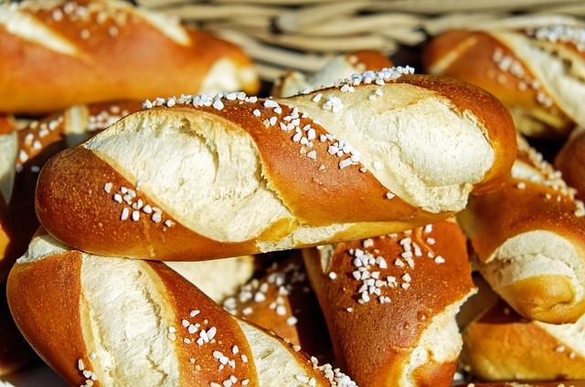

Bánh mì Việt Nam, một biểu tượng của ẩm thực đường phố việt Nam, là một loại bánh mì được làm từ bột mì và thường được kết hợp với các nguyên liệu như thịt nướng,..
Bánh mì Việt Nam có nguồn gốc từ người Pháp , được giới thiệu vào thế kỷ 19 khi Việt Nam còn là thuộc địa của Pháp